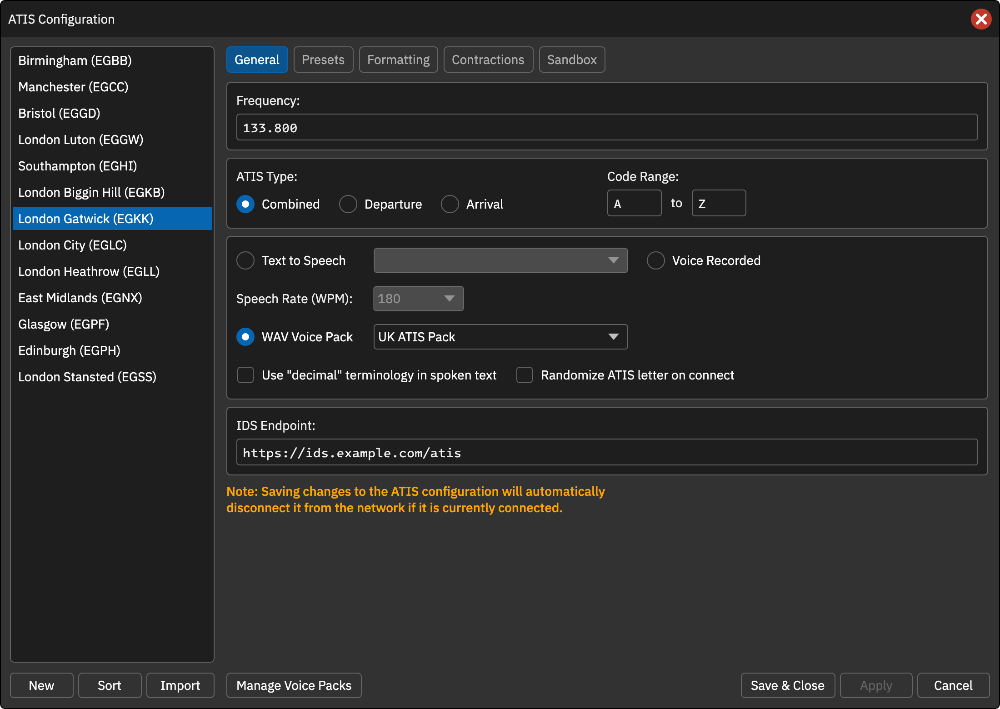
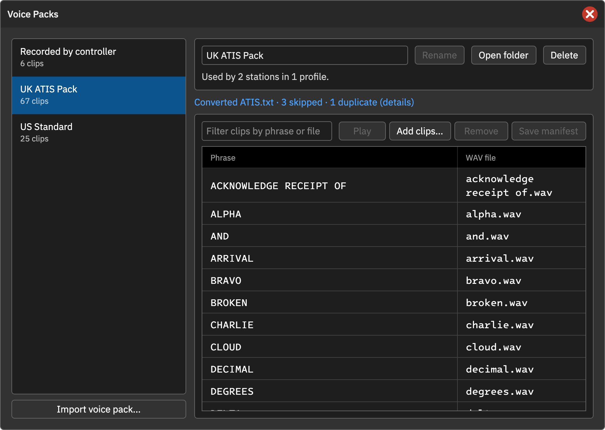

WAV 语音包
语音包使用预录 WAV 片段拼接 ATIS。程序将准备好的语音文本与片段表匹配，按词或短语连接音频，不依赖在线 TTS 模型。
为席位选择语音包
在 ATIS Configuration → General 选择 WAV Voice Pack，从列表选择语音包并点击 Apply 或 Save & Close。每个席位独立选择，也可共用同一个包。缺失原包时需重新导入或选择其他包。
变更语音方式可能断开在线席位，之后需重新检查并上线。缺少词语时不会生成不完整音频，而是列出缺失项。
管理语音包
点击配置窗口底部 Manage Voice Packs：
- Import voice pack…：选择含
manifest.json和 WAV 的文件夹。文件复制到 CAN 数据目录，之后无需保留导入源目录。完全相同的包会复用而非重复导入。 - Rename：更改显示名。
- Open folder：打开文件目录。
- Delete：删除包和音频，若有席位使用会提示数量；这些席位之后需重新选包。
- Clips：查看词句与文件映射；Filter 筛选，编辑后 Save manifest 保存。
- Add clips… / Remove：添加 WAV 或移除映射。
- Play：试听片段。
匹配规则
按位置进行不区分大小写的最长短语匹配，因此可以同时提供 ONE、ALPHA 和 TRANSITION LEVEL 等多词短语。
如果文本中的短语后接逗号且包中存在 INFORMATION, 条目，优先用该片段表现句末语调；否则用普通片段加标点停顿。
支持 8 / 16 / 24 / 32 位整数 PCM WAV、任意采样率、单声道或多声道，生成时统一转为 48 kHz 单声道。
文件结构
{
"name": "CAN ATIS Pack",
"gapMs": 60,
"pauseMs": { ",": 250, ".": 500, ":": 250, "!": 500, "?": 500 },
"clips": {
"ZERO": "numbers/zero.wav",
"ONE": "numbers/one.wav",
"ALPHA": "letters/alpha.wav",
"INFORMATION": "information.wav",
"INFORMATION,": "information_comma.wav",
"TRANSITION LEVEL": "transition_level.wav"
}
}
name 为显示名，gapMs 为词间停顿（默认 60 毫秒），pauseMs 为标点停顿，clips 是词句到相对路径的映射。也可在管理窗口编辑，无需手写 JSON。
旧格式导入
支持 ATIS.txt 中 RECORD:ALFA:alfa.wav 等旧格式。导入时转换为 manifest，原目录不修改；导入后显示跳过、重复条目等摘要。
分享与自动更新
导出使用语音包的配置或单个席位时，程序生成只包含所需片段的 ZIP。接收者导入后自动加入语音库，已存在的包复用。远程更新配置会保留本地语音包选择。
WAV 包可以提供一致的固定播报风格，但它是词句拼接，不是从原版客户端导出的 TTS 模型；自由文本超出词表时需补录。
操作截图参考
以下为上游原版截图，保留英文标签。用于定位操作；品牌、登录字段与网络行为以本页 CAN 说明为准。

